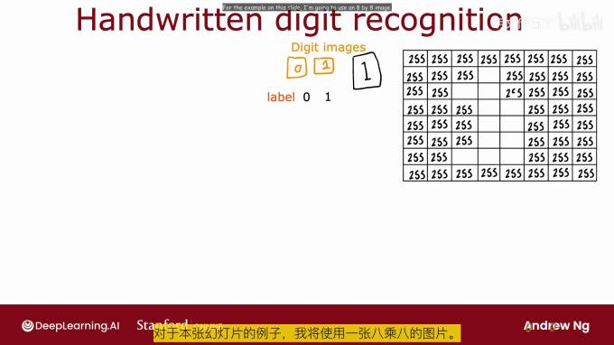
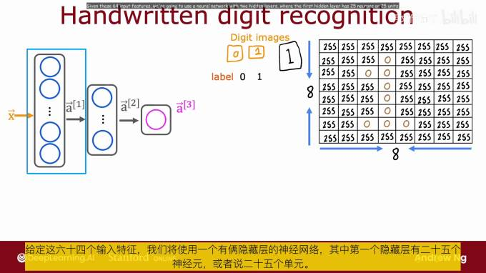
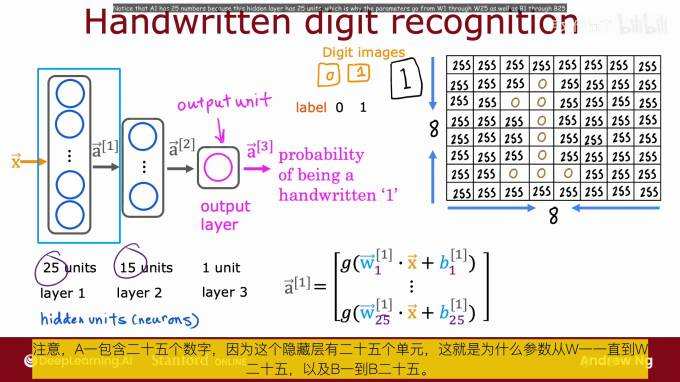
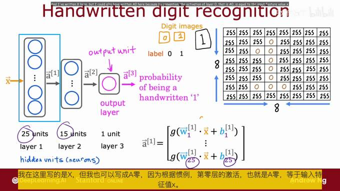
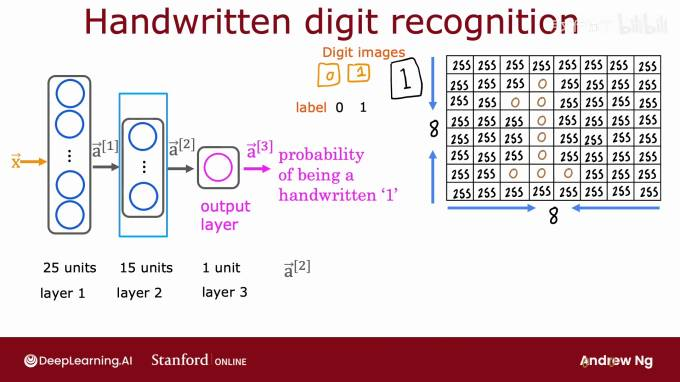
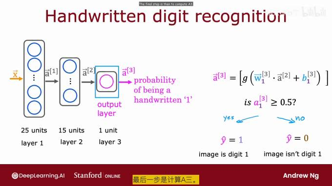
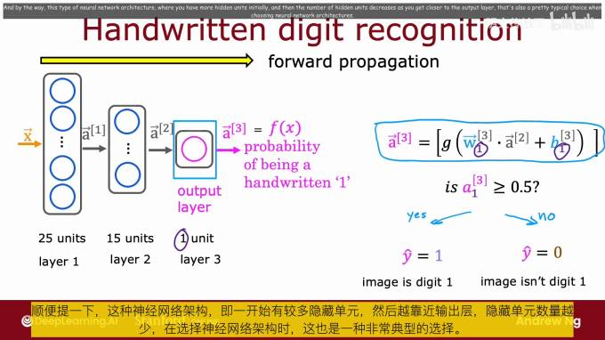
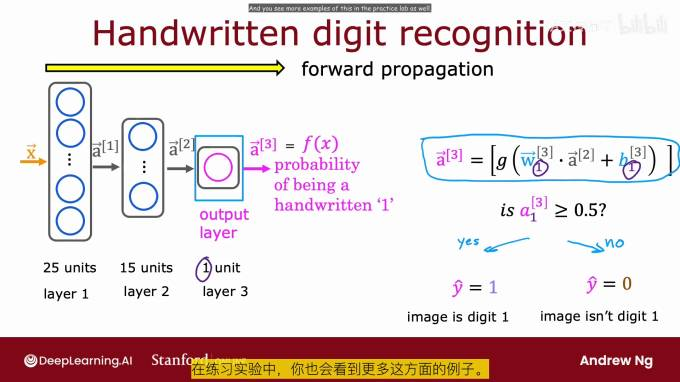

00:02让我们把所学内容整合成一个算法，让神经网络进行推理或做出预测。
00:14我将用多元例子手写数字识别来说明。
00:20为简单起见，我们只区分手写数字零和一。
00:27所以这只是一个二分类问题，我们输入一张图片，并分类这是数字零还是数字一。
00:35本周晚些时候，你也能在练习实验中自己动手玩玩这个。
00:40对于本张幻灯片的例子，我将使用一张八乘八的图片。

00:45所以这张数字一的图片，是这个八乘八的网格或矩阵，或者说六十四个像素强度值，其中二百五十五表示纯白像素，零表示纯黑像素。
01:00不同数字则对应黑白之间不同的灰度。
01:06给定这六十四个输入特征，我们将使用一个有俩隐藏层的神经网络，其中第一个隐藏层有二十五个神经元，或者说二十五个单元。

01:19第二个隐藏层有十五个神经元，或者说十五个单元。
01:25然后最后，输出层输出它为零或一的可能性分别是多大。
01:31那么，让我们逐步过一遍神经网络，从输入 x，也就是这八乘八的六十四个数字，到预测概率 A 三，所需进行的计算序列。
01:45第一步计算是从 x 到 a 一。
01:50这是第一层，或者说第一个隐藏层所做的。
01:54它执行的计算是，上标方括号一的 a 等于右边这个公式。
02:02注意，A 一包含二十五个数字，因为这个隐藏层有二十五个单元，这就是为什么参数从 W 一一直到二十五，以及 B 一到 B 二十五。

02:17我在这里写的是 X，但我也可以写成 A 零，因为根据惯例，第零层的激活，也就是 A 零，等于输入特征。

02:29这就让我们能计算 A 一了。

02:35看看第二个隐藏层，它接着执行这个计算。
02:44其计算方式为，对 W 点乘 A 一加上对应的 B 值，应用 S 型激活函数。
02:54注意，第二层有十五个神经元或说十五个单元，这就是为什么这里的参数从 W 一一直到 W 十五，B 一 S。
03:07现在，我们已经计算出了 A 二。

03:14我们通过非常相似的计算来做到这点。
03:18只是现在这第三层，即输出层，只有一个单元，这就是为什么这里只有一个输出。
03:27所以 A 三只是一十称重。
03:30最后，你可以有选择性地取 A 三下标一，并用零点五作为值进行判断，所以，这个计算序列首先取 x，然后计算 a 一，接着计算 a 二，再计算 a 三，这也是神经网络的输出。
03:56所以你也可以把它写成 f(x)。
04:00记住，我们学习线性回归和逻辑回归时，就用 f(x)来表示线性回归或逻辑回归的输出。
04:10所以我们也可以用 f(x)来表示神经网络作为 x 的函数所计算出的结果。
04:18因为这个计算是从左向右进行的，你从 x 开始，然后计算 a 一，接着 a 二，然后 a 三。
04:27这个算法也称为前向传播，因为你在传播神经元的激活值。
04:35所以，你是沿着从左到右的正向进行这些计算的。
04:41这与另一种叫做反向传播或逆传播的算法形成对比，后者用于学习过程，那是你下周要学习的内容。
04:53顺便提一下，这种神经网络架构，即一开始有较多隐藏单元，然后越靠近输出层，隐藏单元数量越少，在选择神经网络架构时，这也是一种非常典型的选择。

05:09在练习实验中，你也会看到更多这方面的例子。

05:14那么，以上就是使用前向传播算法进行神经网络推理的过程。
05:20有了这个，你就能下载别人训练好并发布在互联网上的神经网络参数，并且使用他们的神经网络对你自己的新数据进行推理。
05:33现在你已经了解了这个图谱和算法，我们来看看如何在 TensorFlow 中实际实现它。
05:41具体来说，我们下个视频来看看这个。